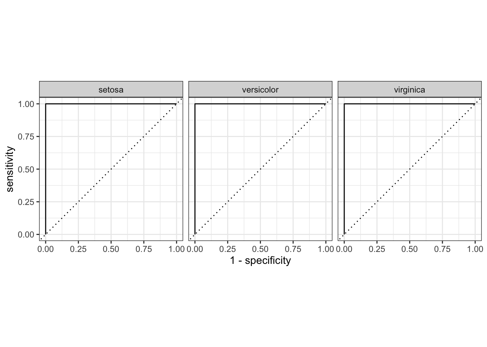

The final step of building a model is to evaluate its performance. The Yardstick package contains various methods to summarize and display model results in a tidy manner.
yardstick contains a variety of methods to extract evaluation metrics from a dataset. There are metric methods for both regression and classification models.
yardstick metric method takes as argument a dataframe, truth column, and estimate column(s).metric, estimator, and estimate information.We will generate accuracy metrics for the iris_preds data defined in the Parsnip Tutorial. As a note, the predictions have a 100% accuracy rate, so the resulting metrics might not be very illustrative.
# computing roc_auc and accuracy for iris predictions
roc_auc(iris_preds,
truth = Species,
.pred_setosa:.pred_virginica) # all estimate classes## # A tibble: 1 × 3
## .metric .estimator .estimate
## <chr> <chr> <dbl>
## 1 roc_auc hand_till 1accuracy(iris_preds,
truth = Species,
estimate = .pred_class)## # A tibble: 1 × 3
## .metric .estimator .estimate
## <chr> <chr> <dbl>
## 1 accuracy multiclass 1All metric methods also have a corresponding vectorized method (ending with _vec) that takes in truth and estimate as vectors and returns the desired metric raw.
# using the vectorized accuracy metric
accuracy_vec(iris_preds$Species,
iris_preds$.pred_class)## [1] 1For a full list of yardstick functions, look at the Official Reference.
yardstick contains four curve-based functions: roc_curve(), gain_curve(), pr_curve(), and [lift_curve()](https://yardstick.tidymodels.org/reference/lift_curve.html. These methods all have corresponding ggplot2::autoplot() methods that allow for easy visualization.
# note that the arguments are the same as those for roc_auc
roc_curve(iris_preds, truth = Species, .pred_setosa:.pred_virginica) |>
autoplot()
If you want to extract multiple metrics from a dataset, you can package those metrics into a single method call using metric_set(). The created method will return each desired metric and its estimate in a tibble.
# say we want to find auc, sensitivity, specificity, and accuracy
# pass in yardstick method names to metric_set()
my_metrics <- metric_set(roc_auc, sens, spec, accuracy)
# retrieving the metrics using our newly defined method
# pass in all arguments needed for contained methods
my_metrics(iris_preds,
truth = Species,
estimate = .pred_class, # for sens, spec, and accuracy
.pred_setosa:.pred_virginica) # for roc_auc## # A tibble: 4 × 3
## .metric .estimator .estimate
## <chr> <chr> <dbl>
## 1 sens macro 1
## 2 spec macro 1
## 3 accuracy multiclass 1
## 4 roc_auc hand_till 1The metrics() function is an yardstick provided metric set that generates common metrics based on the provided type of input data. For example, for numeric models, metrics() will return rmse, rsq, and mae.
# for multiclass models, metrics() will return accuracy and the Kappa statistic
metrics(iris_preds, truth = Species, estimate = .pred_class)## # A tibble: 2 × 3
## .metric .estimator .estimate
## <chr> <chr> <dbl>
## 1 accuracy multiclass 1
## 2 kap multiclass 1